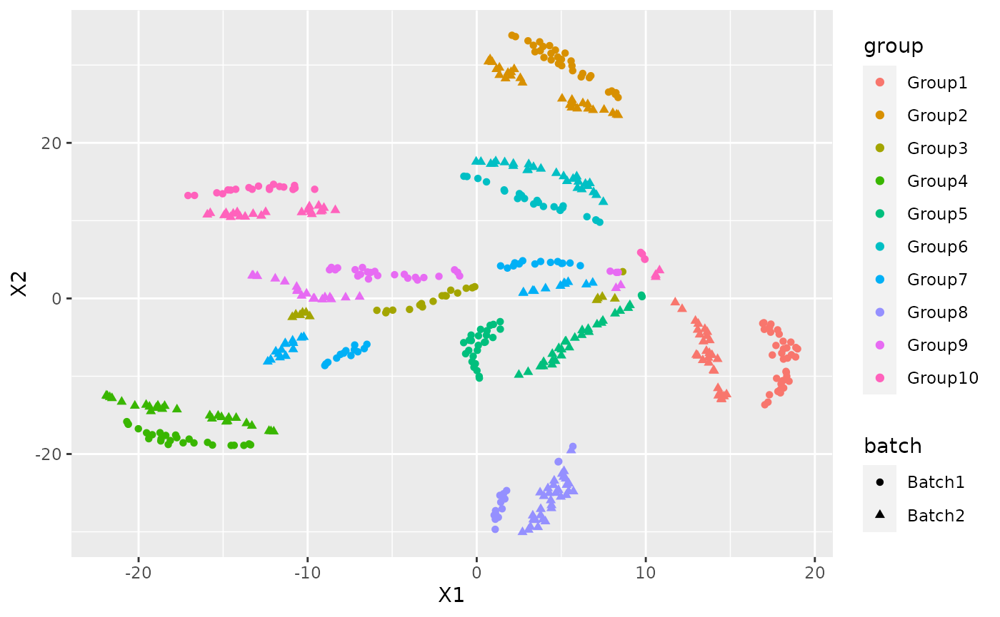

#> Loading required package: SingleCellExperiment
#> Loading required package: SummarizedExperiment
#> Loading required package: GenomicRanges
#> Loading required package: stats4
#> Loading required package: BiocGenerics
#> Loading required package: parallel
#>
#> Attaching package: 'BiocGenerics'
#> The following objects are masked from 'package:parallel':
#>
#> clusterApply, clusterApplyLB, clusterCall, clusterEvalQ,
#> clusterExport, clusterMap, parApply, parCapply, parLapply,
#> parLapplyLB, parRapply, parSapply, parSapplyLB
#> The following objects are masked from 'package:stats':
#>
#> IQR, mad, sd, var, xtabs
#> The following objects are masked from 'package:base':
#>
#> anyDuplicated, append, as.data.frame, basename, cbind, colnames,
#> dirname, do.call, duplicated, eval, evalq, Filter, Find, get, grep,
#> grepl, intersect, is.unsorted, lapply, Map, mapply, match, mget,
#> order, paste, pmax, pmax.int, pmin, pmin.int, Position, rank,
#> rbind, Reduce, rownames, sapply, setdiff, sort, table, tapply,
#> union, unique, unsplit, which.max, which.min
#> Loading required package: S4Vectors
#>
#> Attaching package: 'S4Vectors'
#> The following object is masked from 'package:base':
#>
#> expand.grid
#> Loading required package: IRanges
#> Loading required package: GenomeInfoDb
#> Loading required package: Biobase
#> Welcome to Bioconductor
#>
#> Vignettes contain introductory material; view with
#> 'browseVignettes()'. To cite Bioconductor, see
#> 'citation("Biobase")', and for packages 'citation("pkgname")'.
#> Loading required package: DelayedArray
#> Loading required package: Matrix
#>
#> Attaching package: 'Matrix'
#> The following object is masked from 'package:S4Vectors':
#>
#> expand
#> Loading required package: matrixStats
#>
#> Attaching package: 'matrixStats'
#> The following objects are masked from 'package:Biobase':
#>
#> anyMissing, rowMedians
#>
#> Attaching package: 'DelayedArray'
#> The following objects are masked from 'package:matrixStats':
#>
#> colMaxs, colMins, colRanges, rowMaxs, rowMins, rowRanges
#> The following objects are masked from 'package:base':
#>
#> aperm, apply, rowsum
#> Loading required package: SharedObject
#> Package 'mclust' version 5.4.6
#> Type 'citation("mclust")' for citing this R package in publications.I am going to show how to use NewWave with example data. To do this I am going to generate some data using splatter.
params <- newSplatParams() N=100 set.seed(1234) data <- splatSimulateGroups(params,batchCells=c(N/2,N/2), group.prob = rep(0.1,10), de.prob = 0.2, verbose = FALSE)
Now we have a dataset with 1000 cells and 10000 genes, I will use only 1000. NewWave takes as input raw data, not normalized.
set.seed(12359) data <- data[-which(rowSums(counts(data))==0),] data <- data[sample(1:nrow(data),100),]
As you can see there is a variable called batch in the colData section.
colData(data) #> DataFrame with 100 rows and 4 columns #> Cell Batch Group ExpLibSize #> <character> <character> <factor> <numeric> #> Cell1 Cell1 Batch1 Group1 54983.1 #> Cell2 Cell2 Batch1 Group10 57895.9 #> Cell3 Cell3 Batch1 Group1 63335.0 #> Cell4 Cell4 Batch1 Group4 77862.4 #> Cell5 Cell5 Batch1 Group3 70236.5 #> ... ... ... ... ... #> Cell96 Cell96 Batch2 Group5 40864.8 #> Cell97 Cell97 Batch2 Group8 84957.7 #> Cell98 Cell98 Batch2 Group2 62989.9 #> Cell99 Cell99 Batch2 Group4 70251.4 #> Cell100 Cell100 Batch2 Group7 61297.3
IMPORTANT: For batch effecr removal the batch variable must be a factor
data$Batch <- as.factor(data$Batch)
We also have a variable called Group that represent the cell type labels.
We can see the how the cells are distributed between group and batch
pca <- prcomp_irlba(t(counts(data)),n=10) plot_data <-data.frame(Rtsne(pca$x)$Y)
plot_data$batch <- data$Batch plot_data$group <- data$Group
ggplot(plot_data, aes(x=X1,y=X2,col=group, shape=batch))+ geom_point()

There is a clear batch effect between the cells.
Let’s try to correct it.
The default options use 1 core and no mini-batch approaches, it don’t use the verbose option but I set it TRUE for example purpose(not suggested with big dataset). The default number of latent variables is 2.
res <- newWave(data,X = "~Batch", K=2, verbose = TRUE) #> Time of setup #> user system elapsed #> 0.013 0.004 0.307 #> Time of initialization #> user system elapsed #> 0.008 0.000 0.173 #> Iteration 1 #> penalized log-likelihood = -17672.9776034314 #> Time of dispersion optimization #> user system elapsed #> 0.033 0.036 0.035 #> after optimize dispersion = -17591.5608833721 #> Time of right optimization #> user system elapsed #> 0.044 0.028 0.371 #> after right optimization= -15791.3893949194 #> after orthogonalization = -15782.0156220441 #> Time of left optimization #> user system elapsed #> 0.000 0.000 0.239 #> after left optimization= -15709.3867230794 #> after orthogonalization = -15708.9055641577 #> Iteration 2 #> penalized log-likelihood = -15708.9055641577 #> Time of dispersion optimization #> user system elapsed #> 0.034 0.000 0.034 #> after optimize dispersion = -15494.4122757499 #> Time of right optimization #> user system elapsed #> 0.00 0.00 0.26 #> after right optimization= -15467.2846832325 #> after orthogonalization = -15466.5153632419 #> Time of left optimization #> user system elapsed #> 0.000 0.000 0.234 #> after left optimization= -15454.2580975746 #> after orthogonalization = -15454.2469697156 #> Iteration 3 #> penalized log-likelihood = -15454.2469697156 #> Time of dispersion optimization #> user system elapsed #> 0.051 0.004 0.055 #> after optimize dispersion = -15454.0104909407 #> Time of right optimization #> user system elapsed #> 0.000 0.000 0.271 #> after right optimization= -15447.110127827 #> after orthogonalization = -15447.0139482135 #> Time of left optimization #> user system elapsed #> 0.000 0.000 0.219 #> after left optimization= -15442.5564772174 #> after orthogonalization = -15442.55544835 #> Iteration 4 #> penalized log-likelihood = -15442.55544835 #> Time of dispersion optimization #> user system elapsed #> 0.034 0.000 0.034 #> after optimize dispersion = -15442.5541172271 #> Time of right optimization #> user system elapsed #> 0.001 0.000 0.235 #> after right optimization= -15439.3735666057 #> after orthogonalization = -15439.3375707463 #> Time of left optimization #> user system elapsed #> 0.001 0.000 0.226 #> after left optimization= -15437.1130517059 #> after orthogonalization = -15437.1128048081 #> Iteration 5 #> penalized log-likelihood = -15437.1128048081 #> Time of dispersion optimization #> user system elapsed #> 0.035 0.000 0.035 #> after optimize dispersion = -15437.1127851057 #> Time of right optimization #> user system elapsed #> 0.001 0.000 0.245 #> after right optimization= -15435.4298922987 #> after orthogonalization = -15435.41521154 #> Time of left optimization #> user system elapsed #> 0.00 0.00 0.23 #> after left optimization= -15434.1308501508 #> after orthogonalization = -15434.1307271782 #> Iteration 6 #> penalized log-likelihood = -15434.1307271782 #> Time of dispersion optimization #> user system elapsed #> 0.036 0.000 0.036 #> after optimize dispersion = -15434.1305463676 #> Time of right optimization #> user system elapsed #> 0.001 0.000 0.236 #> after right optimization= -15433.0925374537 #> after orthogonalization = -15433.086087485 #> Time of left optimization #> user system elapsed #> 0.001 0.000 0.222 #> after left optimization= -15432.2399816329 #> after orthogonalization = -15432.239903648 #> Iteration 7 #> penalized log-likelihood = -15432.239903648 #> Time of dispersion optimization #> user system elapsed #> 0.044 0.000 0.045 #> after optimize dispersion = -15432.2397185391 #> Time of right optimization #> user system elapsed #> 0.001 0.000 0.227 #> after right optimization= -15431.5232683864 #> after orthogonalization = -15431.5200489634 #> Time of left optimization #> user system elapsed #> 0.000 0.000 0.211 #> after left optimization= -15430.909636984 #> after orthogonalization = -15430.9095792674
In order to make it faster you can increase the number of cores using “children” parameter:
res2 <- newWave(data,X = "~Batch", K=2, verbose = TRUE, children=2) #> Time of setup #> user system elapsed #> 0.017 0.000 0.322 #> Time of initialization #> user system elapsed #> 0.001 0.003 0.170 #> Iteration 1 #> penalized log-likelihood = -17672.9775236347 #> Time of dispersion optimization #> user system elapsed #> 0.061 0.021 0.041 #> after optimize dispersion = -17591.5607915815 #> Time of right optimization #> user system elapsed #> 0.013 0.020 0.267 #> after right optimization= -15791.3890655716 #> after orthogonalization = -15782.0152602425 #> Time of left optimization #> user system elapsed #> 0.001 0.000 0.159 #> after left optimization= -15709.386392173 #> after orthogonalization = -15708.9052336662 #> Iteration 2 #> penalized log-likelihood = -15708.9052336662 #> Time of dispersion optimization #> user system elapsed #> 0.036 0.000 0.035 #> after optimize dispersion = -15494.4118859439 #> Time of right optimization #> user system elapsed #> 0.001 0.000 0.151 #> after right optimization= -15467.2843480555 #> after orthogonalization = -15466.5150283666 #> Time of left optimization #> user system elapsed #> 0.000 0.000 0.124 #> after left optimization= -15454.2578154837 #> after orthogonalization = -15454.2466877052 #> Iteration 3 #> penalized log-likelihood = -15454.2466877052 #> Time of dispersion optimization #> user system elapsed #> 0.037 0.000 0.037 #> after optimize dispersion = -15454.0102095558 #> Time of right optimization #> user system elapsed #> 0.00 0.00 0.13 #> after right optimization= -15447.1098991494 #> after orthogonalization = -15447.0137200721 #> Time of left optimization #> user system elapsed #> 0.001 0.000 0.118 #> after left optimization= -15442.5562901624 #> after orthogonalization = -15442.5552613079 #> Iteration 4 #> penalized log-likelihood = -15442.5552613079 #> Time of dispersion optimization #> user system elapsed #> 0.038 0.000 0.038 #> after optimize dispersion = -15442.5539302292 #> Time of right optimization #> user system elapsed #> 0.001 0.000 0.135 #> after right optimization= -15439.3734103998 #> after orthogonalization = -15439.3374149598 #> Time of left optimization #> user system elapsed #> 0.001 0.000 0.128 #> after left optimization= -15437.1129168179 #> after orthogonalization = -15437.112669921 #> Iteration 5 #> penalized log-likelihood = -15437.112669921 #> Time of dispersion optimization #> user system elapsed #> 0.035 0.000 0.035 #> after optimize dispersion = -15437.1126502156 #> Time of right optimization #> user system elapsed #> 0.00 0.00 0.16 #> after right optimization= -15435.4297729508 #> after orthogonalization = -15435.4150924244 #> Time of left optimization #> user system elapsed #> 0.000 0.000 0.108 #> after left optimization= -15434.1307428091 #> after orthogonalization = -15434.130619826 #> Iteration 6 #> penalized log-likelihood = -15434.130619826 #> Time of dispersion optimization #> user system elapsed #> 0.034 0.000 0.034 #> after optimize dispersion = -15434.1304390131 #> Time of right optimization #> user system elapsed #> 0.001 0.000 0.129 #> after right optimization= -15433.0924397897 #> after orthogonalization = -15433.0859899198 #> Time of left optimization #> user system elapsed #> 0.001 0.000 0.109 #> after left optimization= -15432.239893353 #> after orthogonalization = -15432.2398153683 #> Iteration 7 #> penalized log-likelihood = -15432.2398153683 #> Time of dispersion optimization #> user system elapsed #> 0.045 0.000 0.046 #> after optimize dispersion = -15432.2396302591 #> Time of right optimization #> user system elapsed #> 0.000 0.000 0.126 #> after right optimization= -15431.5231869165 #> after orthogonalization = -15431.519967418 #> Time of left optimization #> user system elapsed #> 0.001 0.000 0.107 #> after left optimization= -15430.909555991 #> after orthogonalization = -15430.9094981989
Or use some mini-batch approaches: - n_gene_disp : Number of genes to use in the dispersion optimization - n_cell_par : Number of cells to use in the cells related parameters optimization - n_gene_par : Number of genes to use in the genes related parameters optimization
res3 <- newWave(data,X = "~Batch", verbose = TRUE,K=2, children=2, n_gene_disp=100, n_gene_par = 100, n_cell_par = 100, commondispersion = FALSE) #> Time of setup #> user system elapsed #> 0.017 0.000 0.302 #> Time of initialization #> user system elapsed #> 0.001 0.004 0.224 #> Iteration 1 #> penalized log-likelihood = -17672.9776036661 #> Time of dispersion optimization #> user system elapsed #> 0.061 0.008 0.035 #> after optimize dispersion = -17591.5608834334 #> Time of right optimization #> user system elapsed #> 0.027 0.028 0.276 #> after right optimization= -15791.3894014711 #> after orthogonalization = -15782.0156293934 #> Time of left optimization #> user system elapsed #> 0.00 0.00 0.12 #> after left optimization= -15709.3867274444 #> after orthogonalization = -15708.9055685039 #> Iteration 2 #> penalized log-likelihood = -15708.9055685039 #> Time of dispersion optimization #> user system elapsed #> 0.003 0.000 0.052 #> after optimize dispersion = -15417.7577219638 #> Time of right optimization #> user system elapsed #> 0.000 0.000 0.139 #> after right optimization= -15397.7254095132 #> after orthogonalization = -15397.6539748853 #> Time of left optimization #> user system elapsed #> 0.001 0.000 0.126 #> after left optimization= -15323.8273401377 #> after orthogonalization = -15323.7906648718 #> Iteration 3 #> penalized log-likelihood = -15323.7906648718 #> Time of dispersion optimization #> user system elapsed #> 0.004 0.000 0.030 #> after optimize dispersion = -15323.7841042607 #> Time of right optimization #> user system elapsed #> 0.001 0.000 0.133 #> after right optimization= -15311.8944036355 #> after orthogonalization = -15311.7037209191 #> Time of left optimization #> user system elapsed #> 0.000 0.000 0.107 #> after left optimization= -15303.2595440125 #> after orthogonalization = -15303.2562235912 #> Iteration 4 #> penalized log-likelihood = -15303.2562235912 #> Time of dispersion optimization #> user system elapsed #> 0.003 0.000 0.017 #> after optimize dispersion = -15303.2476478147 #> Time of right optimization #> user system elapsed #> 0.000 0.000 0.125 #> after right optimization= -15296.186671437 #> after orthogonalization = -15296.061220437 #> Time of left optimization #> user system elapsed #> 0.001 0.000 0.109 #> after left optimization= -15290.2739668249 #> after orthogonalization = -15290.272559134 #> Iteration 5 #> penalized log-likelihood = -15290.272559134 #> Time of dispersion optimization #> user system elapsed #> 0.004 0.000 0.019 #> after optimize dispersion = -15290.2801364391 #> Time of right optimization #> user system elapsed #> 0.000 0.000 0.122 #> after right optimization= -15285.2880179485 #> after orthogonalization = -15285.2027347594 #> Time of left optimization #> user system elapsed #> 0.001 0.000 0.117 #> after left optimization= -15281.0847666306 #> after orthogonalization = -15281.0840475424 #> Iteration 6 #> penalized log-likelihood = -15281.0840475424 #> Time of dispersion optimization #> user system elapsed #> 0.004 0.000 0.020 #> after optimize dispersion = -15281.0788719419 #> Time of right optimization #> user system elapsed #> 0.000 0.000 0.113 #> after right optimization= -15277.5707141223 #> after orthogonalization = -15277.5156720968 #> Time of left optimization #> user system elapsed #> 0.001 0.000 0.113 #> after left optimization= -15274.6526425716 #> after orthogonalization = -15274.6522753973 #> Iteration 7 #> penalized log-likelihood = -15274.6522753973 #> Time of dispersion optimization #> user system elapsed #> 0.003 0.000 0.018 #> after optimize dispersion = -15274.6565040261 #> Time of right optimization #> user system elapsed #> 0.001 0.000 0.126 #> after right optimization= -15272.2545519566 #> after orthogonalization = -15272.2212659742 #> Time of left optimization #> user system elapsed #> 0.000 0.000 0.107 #> after left optimization= -15270.2777901171 #> after orthogonalization = -15270.2776192323 #> Iteration 8 #> penalized log-likelihood = -15270.2776192323 #> Time of dispersion optimization #> user system elapsed #> 0.004 0.000 0.024 #> after optimize dispersion = -15270.2745086585 #> Time of right optimization #> user system elapsed #> 0.000 0.000 0.118 #> after right optimization= -15268.6627032496 #> after orthogonalization = -15268.6435540518 #> Time of left optimization #> user system elapsed #> 0.001 0.000 0.105 #> after left optimization= -15267.3477169307 #> after orthogonalization = -15267.3476443361 #> Iteration 9 #> penalized log-likelihood = -15267.3476443361 #> Time of dispersion optimization #> user system elapsed #> 0.013 0.000 0.027 #> after optimize dispersion = -15267.3501726345 #> Time of right optimization #> user system elapsed #> 0.000 0.000 0.109 #> after right optimization= -15266.2817074225 #> after orthogonalization = -15266.2709483266 #> Time of left optimization #> user system elapsed #> 0.00 0.00 0.11 #> after left optimization= -15265.4118022038 #> after orthogonalization = -15265.4117722977 #> Iteration 10 #> penalized log-likelihood = -15265.4117722977 #> Time of dispersion optimization #> user system elapsed #> 0.003 0.000 0.019 #> after optimize dispersion = -15265.4098022808 #> Time of right optimization #> user system elapsed #> 0.00 0.00 0.12 #> after right optimization= -15264.7032609385 #> after orthogonalization = -15264.697306465 #> Time of left optimization #> user system elapsed #> 0.001 0.000 0.110 #> after left optimization= -15264.1270880661 #> after orthogonalization = -15264.1270735666
Now I can use the latent dimension rapresentation for visualization purpose:
latent <- reducedDim(res) tsne_latent <- data.frame(Rtsne(latent)$Y) tsne_latent$batch <- data$Batch tsne_latent$group <- data$Group
ggplot(tsne_latent, aes(x=X1,y=X2,col=group, shape=batch))+ geom_point()
or for clustering:
cluster <- kmeans(latent, 10) adjustedRandIndex(cluster$cluster, data$Group) #> [1] 0.02205628